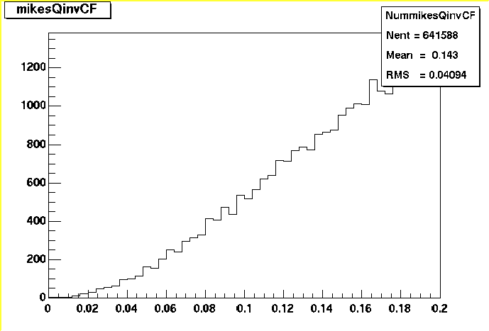
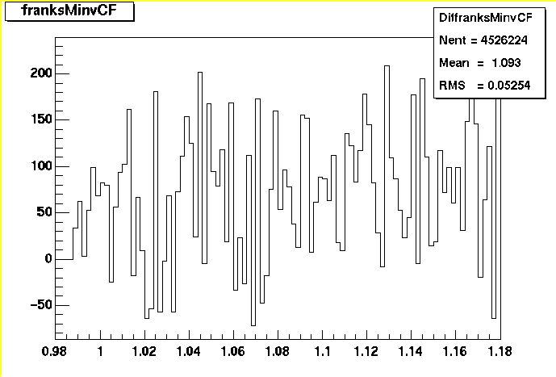

StHbt
StHbt - Star HBT Analysis Framework
Please send questions to Mike Lisa - lisa@mps.ohio-state.edu
In the CVS is a package that is proposed as a standard framework for
STAR two-particle correlation analyses.
It may be found at $STAR/StRoot/StHbtMaker/
The StHbtMaker package works in the current Maker scheme with root4star and
StEvent, but has been designed to allow the framework to be used outside of
Makers, root4star, and/or StEvent, with minimal work. This is to allow for
the contingencies of major infrastructure changes (promised to be a thing
of the past in STAR, but that promise has been made before...), as well as
the case in which a STAR collaborator wishes to work on a machine at his
institution with private-format microDSTs in a framework other than root4star.
The "Maker" aspect of the package is obviously necessary for interfacing with
the root4star/Maker framework, but it has been kept "at a distance." Therefore,
we will refer to the package from now on simply as StHbt.
Many issues driving the design of StHbt were outlined in a
preliminary proposal by Brugalette Gopal, Dave Hartdke, and
Brian Lasiuk, and later fleshed out and extended in meeting discussions.
Some desired functionality of the StHbt framework:
- perform standard, mundane tasks common to all two-particle correlation
codes, such as I/O, event looping, application of cuts, event mixing...
- allow maximum flexibility to the user to define his own analysis and cuts
- be able to perform several 2-particle analyses, and several correlation
functions, simultaneously in a single pass through the data.
- naturally incorporate identical-particle and non-identical, as well as
Track-Track, Track-V0, V0-V0 correlation analyses.
- insulate as much as possible from the ever-changing world of STAR offline
software infrastructure.
The StHbt framework described is object-oriented and implemented in C++. Therefore,
it is helpful if the reader is familiar with the concepts of classes, inheritance,
and objects at least at a rudimentary level.
In the following discussion, it may be useful to refer to the
UML Diagram of the StHbtMaker.
You may also want to refer to
a brief introduction to UML.
At some level, one wants to construct a correlation function of some kind
(things like invariant mass spectra, background subtracted or not, are
considered correlation functions as well). This will typically be some
combination of objects (often histograms) built out of "real" and
event-mixed particle pairs.
A user defines his own correlation function by writing a class. In order
to interface with StHbt, this class must inherit from the base class
StHbtCorrFctn, which defines a few basic (pure virtual)
member functions which must be implemented, and which are called by the
StHbt infrastructure. These are:
- string Report() - This returns a string with any diagnostic information
about the correlation function that the user wishes. At his whim, the
user may wish to return an empty string, his name and phone number, or
random characters. However, more useful information may be how many
pairs are in the various objects constituting the correlation function,
and what corrections (e.g. Coulomb) are being applied.
- void AddRealPair(const StHbtPair*) - StHbt provides the correlation
functions with particle pairs from the same event ("real" pairs). It is
up to the user who writes the correlation function class to decide what
to do with it. A typical action may be to increment a "numerator"
histogram.
- void AddMixedPair(const StHbtPair*) - Similarly, event-mixed pairs are
provided to the correlation function. The user can do whatever he wishes
with them, including ignoring them altogether. A typical action may be
to increment a "denominator" histogram.
- void Finish() - This member function is invoked at the end of passing through
the data (in the STAR Maker scheme, at the time chain->Finish() is invoked).
A typical action may be to divide numerator and denominator histograms,
normalize the ratio, and fit it.
Example of a Correlation Function - QinvCorrFctn
An example of a correlation function class is QinvCorrFctn (click to see
the
header and
implementation files).
In addition to the methods required of all StHbtCorrFctn-derived classes
(see list above), it has histogram data members (numerator, denominator
and ratio) and methods to access them. A more sophisticated version may
contain methods and switches to implement Coulomb corrections, and other
histograms to perform momentum resolution corrections.
The AddRealPair() and AddMixedPair() methods simply increment the numerator
and denominator histograms, while the Finish() method generates the ratio
from those two.
Other correlation functions, like 3D Bertsch-Pratt, Yano-Koonin, angular
correlations, invariant mass correlations, etc., would be implemented by
writing other classes that inherit from the StHbtCorrFctn base class.
Event-wise cuts specify which events are processed in a particular Analysis.
Here, one might typically cut on event multiplicity, z-position of vertex,
etc. The EventCut of an Analysis is checked by the StHbtManager. If the
event passes the cut, that event is further processed (other cuts checked (see
below) and then "real" pairs generated and passed to the AddRealPairs() method
of the Correlation Functions associated with the Analysis, and the event is
also stored in the EventMixingBuffer of that Analysis.
In order to provide maximum flexibility to users, Event cuts are general.
No pre-defined ranges on cut variables are set, and indeed even the variables
to cut on are under the user's control (maybe someone wants to cut on
multiplicy*z-position*(#kaons at forward rapidity) !).
Therefore, the user must write his own EventCut class, which must inherit
from the base class
StHbtEventCut.
EventCut classes may have whatever methods and data members the user desires,
but must have at least the following two methods (pure virtual in the base class):
- bool Pass(const StHbtEvent*) - This method returns "true" or "false,"
indicating whether the StHbtEvent has passed the cut. As mentioned
above, this determination is totally under the user's control. The
method may return "true" all the time, ignoring the StHbtEvent. Or,
it may return "true" or "false" at random. More typically, cuts would
be applied on multiplicity, etc.
- string Report() - similar to the Report() method of StHbtCorrFctn-derived
classes, the StHbtEventCut-derived classes are expected to return a string
of useful information regarding the cut. What information is passed, and
how useful it is, is up to the author of the specific EventCut class.
Example of an Event Cut - mikesEventCut
A very simple example of an Event Cut is mikesEventCut (click to see
the
header
and
implementation files).
A mikesEventCut object will cut on event multiplicity and z-position of the
primary vertex. Therefore, in addition to the required Report() and Pass()
methods, it has data members that hold the allowed ranges on these quantities,
and methods to set those ranges.
Particle-wise cuts specify which tracks or V0's (particles) are to contribute to the
analysis. The ParticleCut of an Analysis is checked for each particle (track or V0) in an
event that has passed that Analysis' EventCut. If a particle passes the cut,
he is added to the ParticleCollection of the PicoEvent for later processing.
Since StHbt is designed to handle non-identical as well as identical
particle correlations, two ParticleCuts are requrired
to be associated with each Analysis. See further discussion below.
N.B.
Since StHbt works with both tracks and V0's, and because the StHbtTrack and StHbtV0
objects naturally contain very different information (see
the discussion on StHbtEvent structure), one does
not derive directly from the
StHbtParticle class. Instead, a user's track cut class inherits from the
StHbtTrackCut base class, and a user's V0 cut class inherits from the
StHbtV0Cut base class.
To see the relationships, refer to the
UML Diagram of the StHbtMaker.
Again, similar
to EventCuts, a ParticleCut class can have any data members and methods
that a user would like, but must have the following methods implemented:
- string Report() - see EventCut above.
- bool Pass - the input argument depends on whether it is a StHbtTrackCut or StHbtV0Cut
- bool Pass(StHbtTrack*) is required for a StHbtTrackCut -
This should return "true" or "false", indicating
whether the track has passed the cut. What determines "passing" is entirely
up to the user.
- bool Pass(StHbtV0*) is required for a StHbtV0Cut -
This should return "true" or "false", indicating
whether the V0 has passed the cut. What determines "passing" is entirely
up to the user.
Note that the method StHbtParticleCut::Type() is used internally by StHbt, and cannot
be overwritten by the user's class. The Manager uses Type() to determine whether it
should compare Tracks from the event's TrackCollection, or V0's from the event's V0Collection,
against the ParticleCut of the Analysis. Therefore, if the user plugs a V0Cut into his
Analysis, then V0's will be sent; similarly, Tracks will be sent if the ParticleCut is a TrackCut.
In addition to these methods, the base class StHbtParticleCut also has one
data member, mMass, and methods to get and set it. This is useful if one
uses the particle mass at all (e.g. if one constructs correlation functions
in relative momentum). Typically in STAR, the tracks have information about
their rigidity vector and dEdx (and other PID-specifying information). However,
it is up to the end-user to decide what species of particle the track represents.
Therefore, in the ParticleCut, one might typically cut on dEdx vs. Rigidity, and
assign the particle a mass based on this.
Example of a Track Cut - mikesTrackCut
A very simple example of a Track Cut is mikesTrackCut (click to see
the
header and
implementation files).
An object of type mikesTrackCut attempts to select tracks that are of a desired type (pion, kaon, proton)
based on PID information from the dEdx group. Similar to mikesEventCut,
it has data members holding the allowed ranges of quantities which it cuts on,
and methods to set those ranges.
Example of a V0 Cut - helensV0Cut
A nontrivial V0 cut written by Helen Caines and Tom Humanic is the
helensV0Cut class.
Click to see the header
and implementation
files.
Pair-wise cuts specify which pairs will contribute to the correlation function.
The PairCut of an Anysis is checked for each pair before it is passed to the
AddRealPair() and for pairs passed to AddMixedPair() methods
of the Correlation Functions associated with that Analysis.
Again, the user has full control over the pair-wise cut employed. As with
the other cuts, a general base class,
StHbtPairCut
is defined, and users should implement their own PairCut classes inheriting
from this. It has the by-now familiar required methods:
- string Report() - Hopefully informative information about the cut.
- bool Pass(StHbtPair*) - "True" or "false" indicating that the pair passed
the cut or not.
Example of a Pair Cut - mikesPairCut
A way-too-simple example of a Pair cut is mikesPairCut (click to see
the
header and
implementation files).
mikesPairCut makes NO cuts on the pair, and so Pass() simply returns "true"
all the time. Appropriate two-track cuts (to eliminate track splitting/merging)
would be applied at this point in a real PairCut.
An analysis
is defined by cuts (EventCut, ParticleCuts, and PairCut),
a specification of the number of events
to mix, and by a collection of correlation functions associated with the
analysis. (Again, it may be helpful to refer to the
UML Diagram of the StHbtMaker.)
It is implemented in the StHbtAnalysis class (click for
the
header and
implementation files.
Users do not write their own analysis class. To define an analysis, a user
writes (or uses existing) EventCut, ParticleCut (TrackCut and/or V0Cut), PairCut, and CorrFctn classes,
instantiates objects of each class, customizes them (i.e. sets appropriate
bounds-- see below), and then simply sets the member data pointers
inside the StHbtAnalysis object to those cut and correlation function objects.
Note that the StAnalysis object points to a collection of StHbtCorrFctn
objects. This allows the user to associate an arbitrary number of correlation
functions with a given analysis.
An important aspect of the StHbt framework is flexibility in terms of input
sources. It is the job of a StHbtEventReader object to get event data from
a source (ASCII file, root Ntuple HBT DST, StEvent...) and to generate a
"standard" HBT event, called
StHbtEvent. This StHbtEvent is then the data
format used within the code. Thus, the interface to the outside world is
localized to the StHbtEventReader object.
To accommodate the many possible input sources and formats in a general way,
inheritance is again used. For any input source/format, a class must be
written, which inherits from the base clase
StHbtEventReader. From the header file, it is seen that every class
derived from StHbtEventReader must have the following methods (again, they are pure virtual
in the base class):
- StHbtEvent* ReturnHbtEvent() - returns the StHbtEvent object. How it does so is totally
up to the specific class. There currently exist readers that build the StHbtEvent object
from STAR's StEvent, from STAR's StMcEvent, and from the HBT groups ASCII-based microDST files.
NOTE: - if no StHbtEvent can be returned, the method should return a null
pointer. In order to clarify the situation to the Manager, there is a protected member
datum StHbtEventReader::mReaderStatus and a method Status() to access it. mReaderStatus=0
means "good status". Here's how it works:
- If the StHbtEventReader::ReturnHbtEvent() method decides, based
on some internal cuts, to throw away the whole event, it returns
a null pointer (return 0), and leaves mReaderStatus=0. That way,
the HbtManager can tell that there is no event this
time, but it should continue to ask for one in the future.
- If the StHbtEventReader::ReturnHbtEvent() method decides that
there are not going to be any more events (like, it hits the end
of file), it returns a null pointer, but sets mReaderStatus!=0.
Then, the HbtManager knows to stop trying to process events.
- StHbtString Report() - the report should identify the specific Reader being used, as well as
including the Report()'s of any EventCut, TrackCut, or V0Cut that is applied (if any) at the
reader level.
Specific readers may have other
methods (which set the ASCII file to be read, for example).
The other methods that the Manager invokes for StHbtEventReader objects are listed below. These
are virtual methods, but not pure virtual methods in the base class StHbtEventReader.
Therefore, the author of a Reader method is free to write his own methods, but is not required to.
If the author does not write an implementation, the default methods of the base class are invoked
by the Manager:
- int Init() - this is invoked when StHbtManager::Init() is invoked (which, in turn is invoked
when StHbtMaker::Init() is invoked). This would be a reasonable place to open a microDST, for
example. It should return 0 (zero) if all is well.
- void Finish() - invoked when StHbtManager::Finish() is invoked (which, in turn, is invoked
when StHbtMaker::Finish() is invoked). One may wish to close a file here.
- int WriteHbtEvent(StHbtEvent*) - if the StHbtEventReader is plugged into the Manager as a Writer,
then the StHbtEvents will be sent to it before they go on to the Analyses. A natural action here
would be.... to write out the event! Currently, only the StHbtAsciiReader writes out events.
The method StHbtEventReader::Status() is not virtual, and is used internally in StHbt by the Manager. It just returns
the value of StHbtEventReader::mReaderStatus. See the note above.
Example of a StHbtEventReader - StStandardHbtEventReader
The class StStandardHbtEventReader (click to see the
header and
implementation files) is
the StHbtEventReader-derived class that reads the input from StEvent in
the root4star/Maker framework. Aside from the required ReturnHbtEvent()
method, it is seen to have a data member containing the pointer to the
current Maker chain, and methods to set and get that pointer.
Note that this Reader also can apply an StHbtEventCut to events, an StHbtTrackCut to tracks,
and an StHbtV0Cut to V0's before it returns the completed StHbtEvent. This is an
efficient way to get rid of tracks, V0's, and whole events before they ever make it into
the rest of the framework. It is especially useful in making microDSTs. See the
web page on the persistent ASCII microDST for an example.
(Once again, it may be helpful to refer to the
UML Diagram of the StHbtMaker.)
The overall processing of data is handled by the Manager, an instantiation
of class StHbtManager (click
here for the header).
Only one StHbtManager object is instantiated. Its only data members are
pointers:
- StHbtEventReader* mEventReader
This simply points to an object of a class derived from
StHbtEventReader that has already been instantiated. For example,
to use the framework in root4star, one would instantiate an
StStandardHbtEventReader object (see above), and set the pointer
in the Manager to this object.
The Manager will invoke the StHbtEventReader::ReturnHbtEvent() of
the object pointed to by StHbtManager::mEventReader to get
StHbtEvent objects for processing.
- StHbtEventReader* mEventWriter (note Writer)
This points to an object of a class derived from
StHbtEventReader that has already been instantiated. For example,
to use the framework in root4star, one would instantiate an
StStandardHbtEventReader object (see above), and set the pointer
in the Manager to this object.
Whenever it gets an StHbtEvent, the Manager will invoke the
StHbtEventReader::WriteHbtEvent(StHbtEvent) of
the object pointed to by StHbtManager::mEventWriter.
Note: this pointer is set null in the Manager constructor.
If it is not changed from this value (i.e. no Writer is plugged in),
then no event writing is attempted. Therefore, use of an event Writer
is optional. See event processing below.
- StHbtAnalysisCollection mAnalysisCollection
This is a collection of objects of type StHbtAnalysis (see above),
each of which, as we have seen, have associated EventCuts, ParticleCuts,
PairCuts, and collections of Correlation Functions.
Importantly, for event-by-event processing,
the interface to the root4star/Maker framework
(StHbtMaker) interacts with
the StHbt framework solely through the StHbtManager object, and all of
the action takes place within the Manager. This should make
it relatively painless to port the StHbt framework away from root4star.
For example, what follows is the StHbtMaker::Make() method:
Int_t StHbtMaker::Make()
{
cout << "StHbtMaker::Make -- processing event" << endl;
mHbtManager->ProcessEvent();
return kStOK;
}
This makes for a trivial StHbtMaker, and one that is easy
to replace in a non-root4star/Maker framework. Click
here
for the StHbtMaker.cxx implemenation file.
At each invokation the StHbtManager::ProcessEvent() method:
- first requests the next StHbtEvent from the StHbtEventReader that mEventReader is pointing to.
- If a null pointer is returned, the Status() of the Reader is checked, and appropriate action taken (see
above).
- If a Writer has been plugged in, its WriteHbtEvent(StHbtEvent*) method is invoked.
- It then loops over all Analyses in its AnalysisCollection, for each:
- it checks the EventCut of the current Analysis. If the event
fails the cut, it goes on to the next Analysis. If it passes...
- A StHbtPicoEvent is instantiated. This is the minimal event information
that will be preserved in the EventMixingBuffer of the current Analysis.
- it loops over all StHbtTracks in the StHbtEvent, and checks them
against the two ParticleCuts of the currentAnalysis
(again, two cuts may be used, to allow for non-identical particle
correlations to be studied). Each StHbtTrack that passes is added
to the FirstParticle or SecondParticle Collection of the picoEvent.
- Now that the picoEvent is created, all possible "real" pairs are
generated from the First and Second Particles (if identical particle
HBT is being done, the looping is slightly different-- see below).
Each pair is checked against the PairCut of the current Analysis.
For each pair that passes the cut:
- A loop is done over the Correlation Functions in the
CorrelationFunctionCollection of the current Analysis, and the
pair is passed to the AddRealPair() method of those Correlation
Functions.
- Next, "mixed pairs" are generated from the First and Second particle
collections of the current picoEvent, and those from picoEvents stored
in the EventMixingBuffer of the currentAnalysis.
Each pair is checked against the PairCut of the current Analysis.
For each pair that passes the cut:
- A loop is done over the Correlation Functions in the
CorrelationFunctionCollection of the current Analysis, and the
pair is passed to the AddMixedPair() method of those Correlation
Functions.
- Finally, the oldest picoEvent stored in the EventMixingBuffer is "popped"
and the current picoEvent is "pushed" onto the EventMixingBuffer of the
current Analysis.
As discussed, a given pass through the data generally involves several simultaneous
Analyses, each with their own Cuts and several simultaneous Correlation Functions.
Since the Analyses, Cuts, and Correlation Functions to be run is determined only
at runtime, and since the Cuts are general (no pre-determined set of quantities on
which to cut), a rather generalized method is required to collect information about
the various objects. Currently, this is achieved through the Report() methods.
Invoking the StHbtManager::Report() method returns a string containing all Reports.
The first is the StHbtEventReader::Report() of the object pointed to by mEventReader.
Then, the method loops over all Analyses in the AnalysisCollection, and concatentates the
returned string from the StHbtAnalysis::Report() method on each. The
StHbtAnalysis::Report() method simply concatentates the Report() from the associated
EventCut, FirstParticleCut, SecondParticleCut, and PairCut objects to which it points, as
well as the Report() of each Correlation Function in its CorrelationFunctionCollection.
In this way, StHbtManager::Report() returns a snapshot of what is happenning.
As mentioned above, it is the responsibility of the author of the CorrFctn or Cut
classes to implement Report() so as to give useful information.
The StHbt framework has been set up to handle interferometry between nonidentical
as well as identical particles.
When creating picoEvents and forming all possible pairs in an event
(done by the StHbtManager), it is important to know whether the Analysis
is analyzing identical particles. (If nonidentical particles are being
correlated, they must kept in seperate lists, and the looping structure is
slightly different.)
The method
bool StHbtAnalysis::AnalyzeIdenticalParticles() serves
to provide this information to the Manager.
If you want to correlate identical particles, you should create the appropriate
StHbtParticleCut object (say the pointer to it is StHbtParticleCut* trkcut), and then set
both the First and Second ParicleCut pointers of the Analysis to X. That is,
if "anal" is a pointer to the Analysis object:
anal->SetFirstParticleCut(trkcut);
anal->SetSecondParticleCut(trkcut);
To correlate non-identical particles, create two ParticleCut objects (say pointers
are trkcut1 and trkcut2), and set the First and Second ParticleCuts of the Analysis
to these:
anal->SetFirstParticleCut(trkcut1);
anal->SetSecondParticleCut(trkcut2);
microDST
The input format of the data may vary (e.g. it may be the root4star StEvent
object, or special ASCII files, or something else). As mentioned above, it
is the job of the StHbtEventReader-derived class to convert whatever intput
into a StHbtEvent object, which has an associated StHbtTrackCollection and an
StHbtV0Collection, which
of course are lists of pointers to StHbtTrack and StHbtV0 objects.
The StHbtEvent class essentially defines the transient HBT microDST. It is
the StHbtEvent, StHbtTrack, and StHbtV0 objects that are presented to the Analysis
EventCut() and ParticleCut() methods. Therefore, it is important that enough
information be present in this microDST for all desired cuts to be possible.
As with any microDST (or even DST), this will require a comprimise between
fullness of data, and space.
Dave Hardtke and Mike Lisa have implemented a reasonable set of structures for
this transient microDST. They are described
on this page.
Click to see the current structure of the
StHbtEvent class,
the
StHbtTrack class,
and the
StHbtV0 class.
picoDST
Once an event has passed the EventCut of an Analysis, a picoEvent is instantiated.
The picoEvent is a transient object that holds the miminum information needed for
the PairCut() and construction of the Correlation Functions. It contains a collection
of StHbtParticle objects. (Although somewhat arbitrary, a track coming from the
event reconstruction is called here a "track." If it passes the track quality,
PID, and phasespace cuts of a ParticleCut, then it becomes a "particle.")
It is natural that
the picoEvent be smaller than the microEvent, and that a StHbtParticle object
be smaller than a StHbtTrack object. This is fortunate, as well, since
several picoEvents will be stored in the EventMixingBuffer of each Analysis.
Like the microEvent class the structure and information content of the picoEvent and
StHbtParticles needs to be discussed in detail.
Click to see the current structure of the
StHbtPicoEvent class and the
StHbtParticle class.
Since the Manager may have a Writer (see above), one may write persistent (disk-resident)
HBT microDSTs. The same StHbtEventReader which writes a file (with the StHbtEventReader::WriteHbtEvent(StHbtEvent*)
method) should be able to read it (with StHbtEventReader::ReturnHbtEvent()). Currently, there is only
one Reader that writes/reads a persistent HBT microDST, the StHbtAsciiReader (click
here
for details), which writes ASCII files. While this format has its advantages
(human-readable, platform-independent), there are clearly more efficient (faster, smaller)
formats (e.g. root TNtuple files), and a few more Writers are envisioned.
When the StHbt framework is used to analyze data, exactly one StHbtManager object is
instantiated. In the root4star/Maker scheme, the StHbtManager is instantiated
in the constructor of the StHbtMaker. A pointer to the StHbtManager is a data member
of the StHbtMaker class. As mentioned above, the StHbtManager is the only "point of
contact" between the StHbt framework and the root4star/Maker framework.
One instantiates and customizes the Reader, and the Analyses (with their various
EventCuts, ParticleCuts, PairCuts, and list of Correlation Functions) in the root
macro. In this way, one may specify at run time:
- the number and types of Analyses to be run
- the types of EventCuts, ParticleCuts, and PairCuts associated with each Analysis
- the cut values used by the Cuts
- the number and types of Correlation Functions to be built by each Analysis.
Thus, one can vary all Cuts, Analyses, and Correlation Functions (type and number)
without checking out the StHbt source from CVS and modifying code, and without
recompiling, as long as all the general classes one would like to use are in the
StHbt library. Naturally, to build an unwritten Correlation Function or use an
unwritten Cut class, C++ code must be written and compiled.
As an example, please see the root macro StHbtExample.C.
Here, two Analyses are simultaneously run.
The first Analysis builds two simultaneous Correlation Functions from negative pions.
They are (1) a 1-dimensional Qinv correlation function with no Coulomb
correction, and (2) a 1-dimensional |q-vector| correlation function with no Coulomb
corection.
As can be seen, the EventCut class chosen is mikesEventCut (see example above) and
in this case cuts rather loosely on z-position of primary vertex and multiplicity.
The First and Second ParticleCuts are the same object and select negative
pions, so this is identical-particle HBT. The PairCut selected is mikesPairCut,
which actually performs no cut, and simply returns "true" for every pair that comes
its way. For both histograms, a numerator histogram is filled with the "real" pairs,
and a denominator from the "mixed" pairs, and at the end (Finish()), the two are
divided to give a a ratio histogram.
The second Analysis builds an invariant mass Correlation Function from
K+K- pairs. This Correlation Function class was written by
Frank Laue to search for phi-mesons. Here, the First and Second ParticleCuts are not
the same, obviously. Similar to the identical-particle HBT of the first Analysis,
a "real" 1-d histogram is built from the "real" pairs, and a "background" from the
mixed pairs. Unlike the identical-particle HBT, the Finish() method subtracts the
two histograms (after normalization) to give a background-subtracted signal.
Hopefully it is clear by this point that one may define (at run time) more Correlation
Functions to be associated with these Analyses, and/or define more Analyses (with
their own Cuts and Correlation Functions) to be performed simultaneously.
In the root4star macro, the set-up of the HBT analsis is done just after the
instantiation of the StHbtMaker object (which in turn instantiates the StHbtManager
object). Note that pointers to the Correlation Functions are declared globally
at the top of the macro file. This is so that one may access the histograms contained
by the CorrelationFunction objects at the root4star command line.
For example, typing "QinvCF->Numerator()->Draw()" at the root4star command line gives
the following picture:

Typing "Minv->Difference()->Draw()" gives:

Here are listed, without extensive elaboration, some associated topics that need
further work.
- The need for/possibility of a hierarchical EventMixingBuffer structure associated
with an Analysis. This would be to handle things like mixing events only
if they have a "similar" primary vertex position.
- A class of Fitting objects to fit Correlation Functions.
- Persistent storage of Correlation Functions and Cuts.
{kind=link}